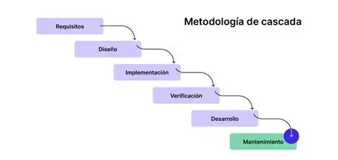

1. Historia
El Modelo Cascada fue formalmente introducido por Winston W. Royce en 1970. Se presentó como una respuesta a la necesidad de un enfoque sistemático y disciplinado en el desarrollo de software, inspirado en la industria de la construcción.

2. Fases del Método
- Requisitos: Definición de lo que el software debe hacer.
- Diseño: Arquitectura, base de datos e interfaz.
- Codificación: Traducción de los diseños a código real.
- Pruebas: Verificación del cumplimiento de requisitos.
- Despliegue: Entrega al cliente final.
- Mantenimiento: Corrección de errores y actualizaciones.